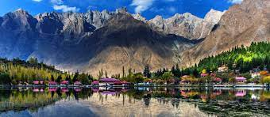
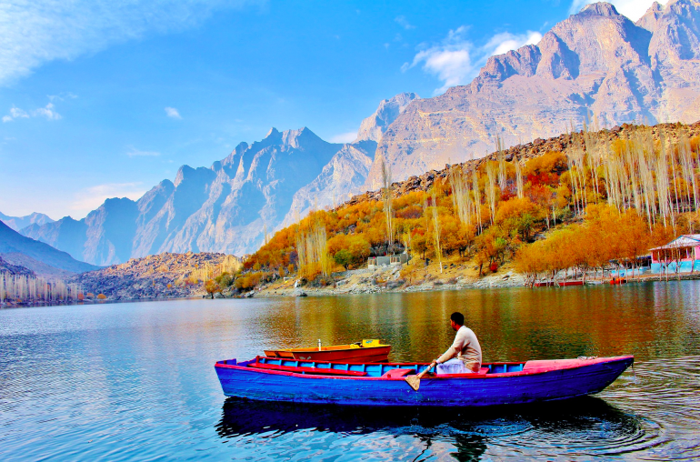
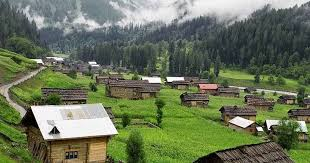
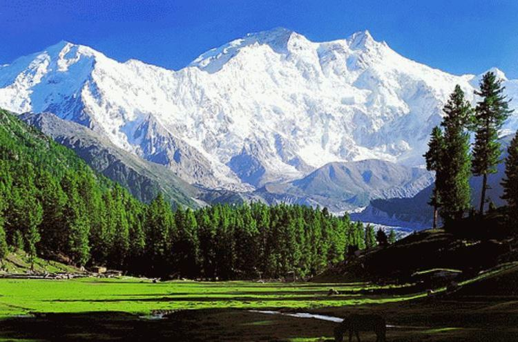
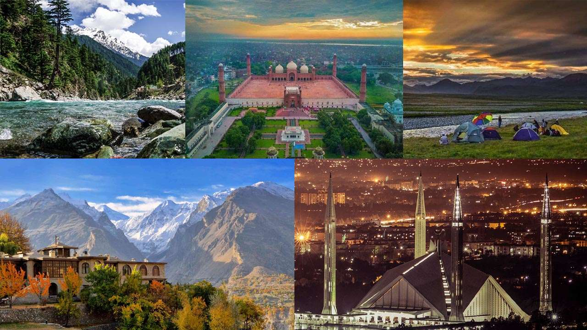
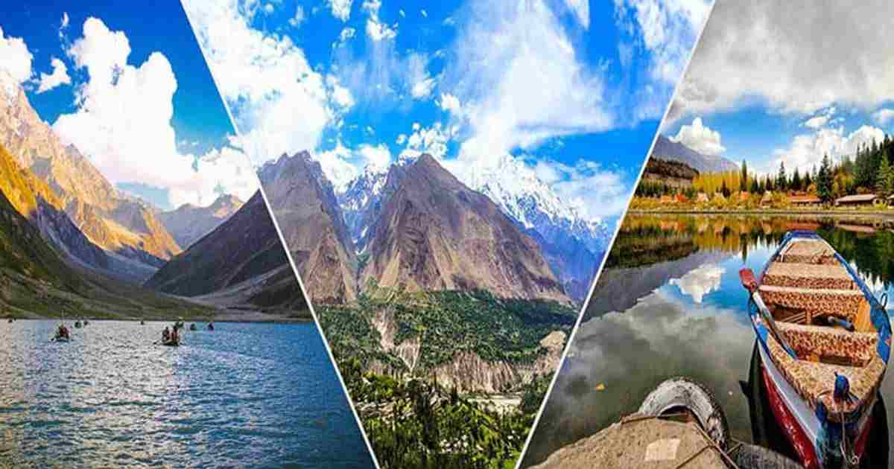

PAKISTAN TOURISM WEBPAGE






TOURISM IN PAKISTAN
Tourism in Pakistan is a growing industry.In 2010, Lonely Planet termed Pakistan "tourism's 'next big thing' for more years than we care to remember". The country is geographically and ethnically diverse, and has a number of historical and cultural heritage sites. Condé Nast Traveller ranked Pakistan The Best Holiday Destination for 2020 and also declared it the third-highest potential adventure destination in the world for 2020.As security in the country improves, tourism increases; in two years, it has increased by more than 300%. The Pakistani government had launched online visa services for 175 countries and 50 countries were offered visa on arrival, making visiting Pakistan easier. The country received an influx of travel vloggers, who promoted the characteristics of the country, such as in the Northern Pakistan, like Hunza and Skardu.
In 2018, the British Backpacker Society ranked Pakistan the world's top adventure travel destination, describing the country as "one of the friendliest countries on earth, with mountain scenery that is beyond anyone's wildest imagination". Forbes ranked Pakistan as one of the ‘coolest places’ to visit in 2019. The World Economic Forum's Travel & Tourism Competitiveness Report placed Pakistan in the top 25 percent of global destinations for its World Heritage Sites, which range from the mangroves in the Indus delta to the Indus Valley civilization sites including Mohenjo-daro and Harappa.
According to the World Economic Forum's Travel and Tourism Competitiveness Report 2017, the direct contribution of travel and tourism to Pakistan's GDP in 2015 was US$328.3 million, constituting 2.8% of the total GDP. According to the World Travel and Tourism Council, the direct contribution of travel and tourism to Pakistan's GDP in 2016 was Rs. 793 billion (equivalent to Rs. 4.0 trillion or US$14 billion in 2021), constituting 2.7% of the total GDP.By 2025, the government predicts tourism will contribute Rs. 1 trillion (US$3.5 billion) to the Pakistani economy.
In October 2006, one year after the 2005 Kashmir earthquake, The Guardian released a list of "the top five tourist sites in Pakistan" to help the country's tourism industry.The sites included Lahore, the Karakoram Highway, Karimabad and Lake Saiful Muluk. To promote the country's cultural heritage, in 2007, Pakistan launched the "Visit Pakistan" marketing campaign that involved events including fairs, religious festivals, regional sporting events, arts and craft shows, folk festivals and openings of historical museums.
In 2013, over half a million tourists visited Pakistan, contributing $298 million; these figures have since risen to over 6.6 million tourists in 2018.By comparison, Pakistan's domestic tourism industry is estimated at 50 million tourists who travel in the country on short trips usually between May and August. The largest inflow of tourists are from the United Kingdom, followed by United States, India and China.